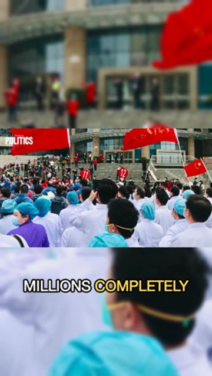

Podział · 2 osoby
12:04–12:49 · 45 s9/10
Pandemia, której nikt nie pamięta
„Te przypadki…” — hak
Dlaczego ten moment: zaskakujący fakt w pierwszym zdaniu, reakcja rozmówcy w kadrze.
PobierzWywiad, podcast albo wykład → 2–4 samodzielne klipy po 20–60 s, z kadrem na mówcę i napisami.
Podcast o polityce · 58 min → 4 shorty
„Te przypadki…” — hak
Dlaczego ten moment: zaskakujący fakt w pierwszym zdaniu, reakcja rozmówcy w kadrze.
Pobierz Za mówcą
Za mówcą„Na podstawie różnych…” — hak
Dlaczego ten moment: zamknięta myśl od pytania do puenty, bez kontekstu z wcześniej.
Pobierz„Nigdy nie doświadczyliśmy…” — hak
Dlaczego ten moment: mocne tempo, jeden mówca, gotowy tytuł w wypowiedzi.
Pobierz
Automatyczne · archiwum„Miliony zupełnie…” — hak
Dlaczego ten moment: materiał archiwalny daje obraz, nie tylko gadającą głowę.
Pobierz